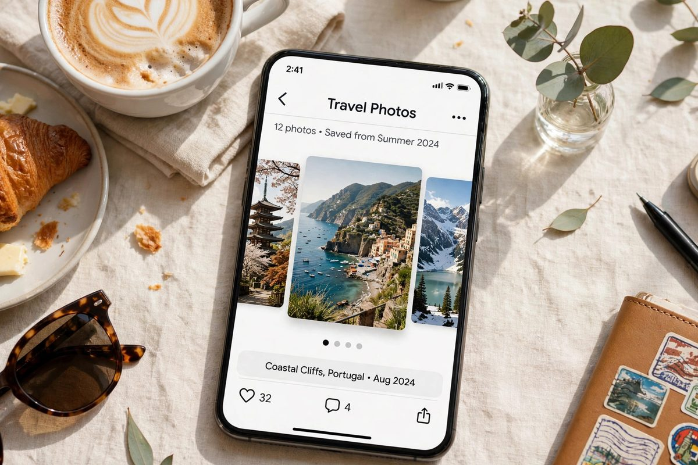

How to Save Instagram Photos and Carousels: The Official Methods
Save Instagram photos and multi-photo carousels using Instagram's Save feature and your own camera roll.
Photos are still at the heart of Instagram, and carousels, which hold up to 20 photos in a single post, are one of the most popular formats. Saving a photo or a carousel works differently from saving a video, because Instagram treats photos as part of the feed rather than as files to download. This guide explains the official options and the honest limits.
Save photos inside Instagram
Tap the bookmark icon on any photo or carousel to save it to your Saved collection. The whole carousel is saved, and you can swipe through every photo when you open it later. Saving is private and the creator is not notified. Create collections for different topics, such as Recipes, Travel, or Design, so your saved photos stay findable. This is the option Instagram intends you to use, and it works for every public post.
Your own photos are yours
If you took the photo, the original file is in your phone's camera roll, and that is the best copy to keep. Instagram also keeps your posted photos in your Archive, from which you can download them. If you edited a photo in another app, the edited version is in that app or in your camera roll too. Never rely on downloading your own photo from Instagram, because the version Instagram stores is compressed and smaller than the original.
Screenshots for personal use
A screenshot is the practical way to keep a detail from a photo, such as an address on a poster, a recipe ingredient list, or a discount code. It is fine for personal use, but reposting a screenshot of someone else's photo as your own is not, and it can be reported. If you want to share a photo you like, share the link to the original post, which credits the creator and sends viewers to their profile.
Beware photo downloader sites
Websites that promise to download any Instagram photo work by fetching the image file, and many are ad-heavy or misleading. They also raise the same copyright problem as video downloaders: a photo is a creative work owned by the person who took it. If you need a photo for a project, ask the creator for permission or use a stock photo library. For personal keepsakes, the Save feature and a screenshot cover almost every legitimate need.
Back up your Instagram photos
Your Instagram photos exist in three places, and you should make sure at least one of them is under your control. The first is your camera roll, where the original photo lives if you took it with your phone. The second is Instagram's servers, which keep the compressed version you posted. The third is a backup you make yourself, on an external drive or a cloud service, which is the only copy that survives if you lose your phone and your account on the same day. Once a year, request a download of your Instagram data from the settings, save the file to an external drive, and check that the photos open. For your best photos, keep the original files from your camera roll as well, because the Instagram copy is compressed and smaller. A backup you have never tested is only a hope, so open a few files and confirm they are intact.
Frequently Asked Questions
Can I download someone's photo?
Instagram offers Save, not a file download, for other people's photos. Downloading and reusing them without permission infringes copyright.
How do I save a carousel?
Tap the bookmark icon and the whole carousel is saved. You can swipe through all its photos later.
Where are my own photos?
Your own photos are in your camera roll if you took them with your phone, and in your Instagram Archive if you posted them.